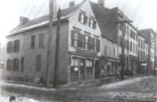
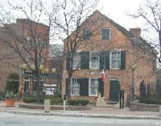

|
Quackenbush House
 The historic structure popularly known as the Quackenbush House is the oldest intact building still standing in the city of Albany! Believed to have been built by a Pieter Quackenbush (probably PWQ) during the 1730s, it is best known (at least in legend) as the home of Revolutionary War officer Hendrick Quackenbush. This substantial building is perhaps typical of the city houses built by Albany's business leaders and was situated on a large block of land in old Albany's North End. It testifies to the success of its owners' enterprises which included brickmaking, distilling, tanning, and shipping. Situated on the east side of North Market Street (today's Broadway) and located on the flood plain and along the road north out of Albany, it was described by a number of eighteenth century observers. Located beyond the original boundaries of the city, the Quackenbush house was technically part of Rensselaerswyck and then the town of Watervliet. In 1812, Albany's boundary line was extended northward bringing the Quackenbush house into the city of Albany. During the twentieth century, the Quackenbush house was a gas station and restaurant. In 1954, it appears to have been known as "Bill's Tavern & Restaurant." It is said to have been almost destroyed in 1969 to make way for a ramp that would be built off of the new riverfront highway (I-787). Located in the heart of "Quackenbush Square," under a number of proprietors it has been a fine restaurant and a cornerstone of one of Albany's premier cultural districts! As one of the most important "living landmarks" of early Albany history, the early history of the Quackenbush House will be explained further on this page!
Sources: A Wikipedia entry does a good job of avoiding problems of fact and bringing its history up to the present. More online history from Google.com. Einhorn-Yaffee, Architecture-Interior Design, Quackenbush House: A Restoration for the City of Albany, New York (Albany, 1975), a historic structures report! Photograph of the Quackenbush House taken during the 1890s when it was an antiques store. Printed in Rittner, Images of America: Albany, p. 23. Often-reproduced but seemingly unattributed modern photograph of the Quackenbush House and Visitors Center. posted: 12/15/02; revised 7/15/10 |